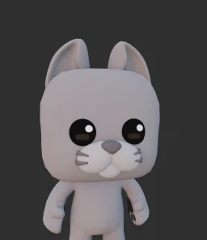

Octubre · 2026
Un mismo mueble con seis acabados
En octubre, la mayoría de los muebles básicos ya tenía seis estilos. El equipo reunió dos versiones del mismo cuarto para ver qué cambiaba al sustituir colores, texturas y materiales.
Explorar las piezas ↓ Comparar los cuartos ↓
Octubre · 2026
Avances por sistema
Habitaciones y mobiliarioCambiar el estilo de un cuarto amueblado
Qué se hizo
Se creó un material maestro para muebles. Las colecciones básicas recibieron, en general, seis estilos por mueble. Se probaron en habitaciones reutilizando texturas de piso y pared. Los muebles nuevos seguían en geometría, con tamaños por ajustar.
Cómo funciona
El artista marca en la malla qué partes comparten material, sombra o borde claro. Esas zonas permiten cambiar color, material y textura y comparar combinaciones dentro del mismo cuarto.

Creador de personajesCombinar marcas de pelaje y hocicos felinos
Qué se hizo
Las pruebas de octubre amplían las texturas del personaje y muestran cómo cambia la cara al montar un hocico de gato. El archivo permite recorrer los patrones de pelaje y las variantes felinas.
Cómo funciona
El patrón distribuye las manchas sobre la superficie del personaje. El hocico cambia el volumen de la cara. Compararlos por separado permite distinguir un cambio de color de un cambio de forma.

 PetCare · Arte no finalBaño, comida y juego en el cuarto
PetCare · Arte no finalBaño, comida y juego en el cuarto
Qué se hizo
El registro de octubre reúne las tres actividades de cuidado. El diseño de PetCare detalla la secuencia del baño y sus familias de herramientas, la entrega de alimentos y el gesto que corresponde a cada juguete.
Cómo funciona
Durante el baño se moja el pelaje, se aplica jabón, se frotan las manchas y se enjuaga. La toalla seca y el cepillo remata el cuidado. La ficha completa muestra las variantes, los indicadores de desgaste y la espera antes de reutilizar una toalla.
Colección de octubre
Materiales, pelajes y hocicos
El mismo cuarto cambia de aspecto
Las capturas de octubre enseñan cómo el material maestro cambia el ambiente y cómo se organizan sus controles.
 Catálogo de mobiliarioEl nuevo lote de mobiliarioRecorre 29 modelos del archivo de arte, desde el caballete hasta la mesa con sombrilla.↗
Catálogo de mobiliarioEl nuevo lote de mobiliarioRecorre 29 modelos del archivo de arte, desde el caballete hasta la mesa con sombrilla.↗
Comparar los acabados del cuarto
Prueba interactiva
Dos acabados del mismo cuarto
Desliza la división sobre las dos capturas de octubre. Fíjate en los gabinetes, el suelo y la pared del fondo.
 ↔
↔
Corte de producción · octubre de 2026
Qué quedaba por cerrar
- 32 muebles nuevos en geometría base
- El inventario de arte ya recogía sus formas. Quedaba ajustar tamaños, asignar nombres y distribuir las piezas en colecciones.
- 8 lotes en el sistema de zonas
- Las zonas permiten cambiar materiales por partes. El lote 006 figuraba en pausa y seguía pendiente completar estilos en Unity.
- 3 tamaños en el kit de habitaciones
- El kit contemplaba cuadrículas de 10 × 8, 12 × 8 y 14 × 8 casillas. Faltaba confirmar cuáles podría elegir el jugador.